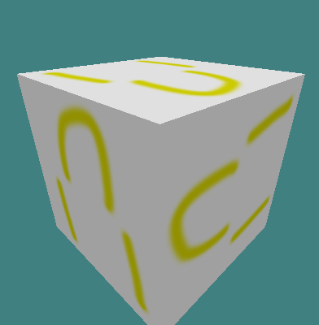

While an MDL file may have been used by MANY programs from the 90's and early 2000's, The focus here is Valve's MDL format for Gold-source. An MDL file Consists of 3 files:
- ".QC" (Q.uake C) A script file that compiles SMD files, assigns animation SMD's and locates textures.
static (non-animated) QC template
$modelname Cube.mdl $cd "./" $scale 1 $cliptotextures // reference mesh $body studio cube // Animation $sequence "static" "cube"more on QC scripting
Example SMD (src file name: Cube.smd*)
version 1
nodes
0 "root" -1
end
skeleton
time 0
0 0 0 0 0 0 0
end
triangles
mat.bmp
0 1.000000 1.000000 -1.000000 0.000000 0.000000 -1.000000 0.000000 1.000000
0 1.000000 -1.000000 -1.000000 0.000000 0.000000 -1.000000 0.000000 0.666667
0 -1.000000 -1.000000 -1.000000 0.000000 0.000000 -1.000000 0.333333 0.666667
mat.bmp
0 1.000000 0.999999 1.000000 0.000000 0.000000 1.000000 1.000000 0.333333
0 -1.000000 1.000000 1.000000 0.000000 0.000000 1.000000 1.000000 0.666667
0 -1.000000 -1.000000 1.000000 0.000000 0.000000 1.000000 0.666667 0.666667
mat.bmp
0 1.000000 1.000000 -1.000000 1.000000 -0.000001 -0.000000 1.000000 0.333333
0 1.000000 0.999999 1.000000 1.000000 -0.000001 -0.000000 0.666667 0.333333
0 0.999999 -1.000001 1.000000 1.000000 -0.000001 -0.000000 0.666667 0.000000
mat.bmp
0 1.000000 -1.000000 -1.000000 -0.000000 -1.000000 -0.000000 0.333333 0.333333
0 0.999999 -1.000001 1.000000 -0.000000 -1.000000 -0.000000 0.333333 0.000000
0 -1.000000 -1.000000 1.000000 -0.000000 -1.000000 -0.000000 0.666667 0.000000
mat.bmp
0 -1.000000 -1.000000 -1.000000 -1.000000 0.000000 -0.000000 0.333333 0.666667
0 -1.000000 -1.000000 1.000000 -1.000000 0.000000 -0.000000 0.000000 0.666667
0 -1.000000 1.000000 1.000000 -1.000000 0.000000 -0.000000 0.000000 0.333333
mat.bmp
0 1.000000 0.999999 1.000000 0.000000 1.000000 0.000000 0.000000 0.000000
0 1.000000 1.000000 -1.000000 0.000000 1.000000 0.000000 0.333333 0.000000
0 -1.000000 1.000000 -1.000000 0.000000 1.000000 0.000000 0.333333 0.333333
mat.bmp
0 -1.000000 1.000000 -1.000000 0.000000 0.000000 -1.000000 0.333333 1.000000
0 1.000000 1.000000 -1.000000 0.000000 0.000000 -1.000000 0.000000 1.000000
0 -1.000000 -1.000000 -1.000000 0.000000 0.000000 -1.000000 0.333333 0.666667
mat.bmp
0 0.999999 -1.000001 1.000000 0.000000 0.000000 1.000000 0.666667 0.333333
0 1.000000 0.999999 1.000000 0.000000 0.000000 1.000000 1.000000 0.333333
0 -1.000000 -1.000000 1.000000 0.000000 0.000000 1.000000 0.666667 0.666667
mat.bmp
0 1.000000 -1.000000 -1.000000 1.000000 -0.000000 0.000000 1.000000 0.000000
0 1.000000 1.000000 -1.000000 1.000000 -0.000000 0.000000 1.000000 0.333333
0 0.999999 -1.000001 1.000000 1.000000 -0.000000 0.000000 0.666667 0.000000
mat.bmp
0 -1.000000 -1.000000 -1.000000 -0.000000 -1.000000 0.000000 0.666667 0.333333
0 1.000000 -1.000000 -1.000000 -0.000000 -1.000000 0.000000 0.333333 0.333333
0 -1.000000 -1.000000 1.000000 -0.000000 -1.000000 0.000000 0.666667 0.000000
mat.bmp
0 -1.000000 1.000000 -1.000000 -1.000000 0.000000 -0.000000 0.333333 0.333333
0 -1.000000 -1.000000 -1.000000 -1.000000 0.000000 -0.000000 0.333333 0.666667
0 -1.000000 1.000000 1.000000 -1.000000 0.000000 -0.000000 0.000000 0.333333
mat.bmp
0 -1.000000 1.000000 1.000000 0.000000 1.000000 0.000000 0.000000 0.333333
0 1.000000 0.999999 1.000000 0.000000 1.000000 0.000000 0.000000 0.000000
0 -1.000000 1.000000 -1.000000 0.000000 1.000000 0.000000 0.333333 0.333333
end

An Image texture with the proper specifications and name that correlates with the SMD example above
When these assets are compiled the end result is shown below:
